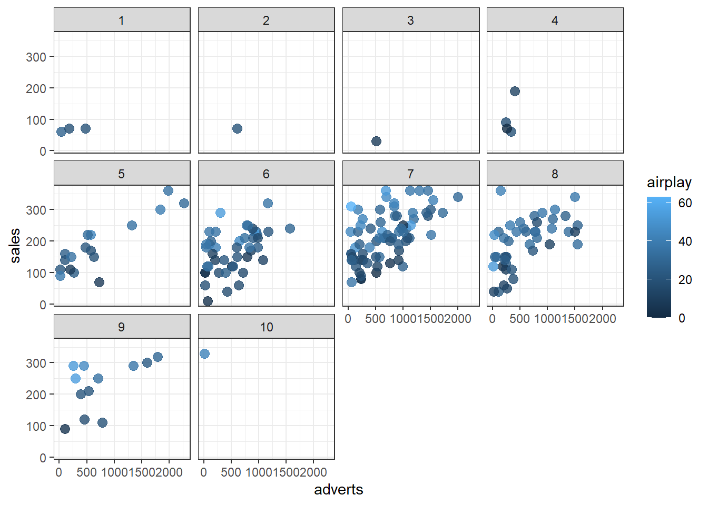

5 Useful packages and functions that helped me learn
This is a bit of a strange chapter, I am not entirely sure why I included it, but I think it might be a good idea to have a few words on the packages that we will be using. This Chapter could be returned two If you get stuck with some code and for some really strange reason can´t find a better place to search for answers than here. In sum, there are some useful packages and function in R, and using them might be beneficial for both learning and doing you statistics.
5.1 Tidyverse
Like the name implies, tidyverse is an entire universe of connected packages designed to make your coding comfortable and aesthetically pleasing. I neither have the expertise nor the time to go through even the basics of all the tidyverse packages but we will be using them frequently, and when it happens there will be some notation. In the meantime, the first chapter of R for data science is an absolute gem if you are serious about learning R. Very nice introduction, assuming no previous coding experience (and it´s free) I cannot recommend it enough (hence the repeat) https://r4ds.had.co.nz/
5.2 Distribution functions - rnorm, dbeta, rbinom etc
These functions were probably what got me to actually think I understood some things about statistics, which is quite impressive for me. They are essentially functions that describe the shape of certain distributions and gives you the ability to generate random variables from those distributions. The possibilities of this is really endless but I will show some examples of how to generate data below.
#Since the data is "random" it will be impossible to reproduce if you re-run the code. This is why we usually set a seed. This makes it so the random data can be reproduced. We do this through the set.seed function before we generate random numbers. Fun fact, the numbers are not truly random since they can be reproduced exactly, they are pseudo-random.
#Random data following the normal distribution
set.seed(5395) #setting the seed, this can by any combination of integers.
norm_data <- rnorm( n = 500 #the number of observations we want
, mean = 4 #the mean of the numbers
, sd = 1 #the standard deviation of the data
)
#Prof of normality through histogram
hist(norm_data)#Voila.
#We can do the same with the t-distribution
set.seed(453)
t_data <- rt( n = 50 #number of observations
, df= 6 #degrees of freedom
)
hist(t_data)#the dame things can be done to the F distribution using rf()
#If we want binary outcomes we can use the binomial distribution with r(binom)
#let’s say we want to simulate 10 tosses of a fair coin for example.
set.seed(5325)
coin_data <- rbinom( n = 10 #number of observations/tosses
, size = 1 #number of trials per observation(one this time)
, prob = .5 #the probability of a successful outcome (50/50)
)
hist(coin_data)#Cool, If we say 1 is tails we have 6 tails and 4 heads. These might seem like very trivial things, but by manipulating the data and doing analyses on data sets where you actually KNOW what the true population parameters are, can be very useful and enlightening. Simulation is the best kind of preparation; it also highlights very well what you expect from the data. The next package I can recommend handles data generation quite smoothly.
5.3 Faux
One of the most powerful properties of programming languages is their ability to generate pseudo random variables. We have seen that we can easily generate independent random numbers following some distribution, but what if we want to simulate relationships between variables? enter faux. There are probably many other packages doing the same things, but this is the one I use, and it has served me quite well. … let´s generate the data that we will work with through this chapter.
library('faux')
set.seed(324) #the seed returns!
data <- rnorm_multi(n = 500 #the number of observations we want
, vars = 3 #number of variables we want
, mu = c(3,5,2)#the three means for our variables.
, sd = c(1.3, 2, .6) #the three SDs
, r = c(1, .4, .7, #this is where it gets tricky. r is
.4, 1, .4, #the correlation matrix. If we have
.7, .4, 1) #many variables it can be tedious
, varnames = c('y', 'x', 'z')) #the names of our variables
#let’s look at the correlations and the mean of our data
cor(data) #correlates all variables in the data set with each other## y x z
## y 1.0000000 0.3674651 0.6744010
## x 0.3674651 1.0000000 0.4105545
## z 0.6744010 0.4105545 1.0000000summary(data) #summarises the content in the data## y x z
## Min. :-0.3747 Min. :-0.8381 Min. :0.2554
## 1st Qu.: 1.9188 1st Qu.: 3.6476 1st Qu.:1.5958
## Median : 2.9566 Median : 4.9841 Median :2.0288
## Mean : 2.9204 Mean : 5.0046 Mean :2.0239
## 3rd Qu.: 3.7996 3rd Qu.: 6.3985 3rd Qu.:2.4164
## Max. : 6.5359 Max. :12.3798 Max. :3.8473#Notice how the values are similar, but not exactly the same, why is that? it is because of randomness. We can remedy this if you want to have full control over the parameter estimates in your data. We do this adding the empirical = true to the data generation formula like so:
data.2 <- rnorm_multi(n = 500
, vars = 3
, mu = c(3,5,2)
, sd = c(1.3, 2, .6)
, r = c(1, .4, .7,
.4, 1, .4,
.7, .4, 1)
, varnames = c('y', 'x', 'z')
, empirical = TRUE) #do we want empirical estimates?
#This is now empirical data and not data sample from a population
cor(data.2) ## y x z
## y 1.0 0.4 0.7
## x 0.4 1.0 0.4
## z 0.7 0.4 1.0summary(data.2)## y x z
## Min. :-0.8063 Min. :-0.8758 Min. :0.293
## 1st Qu.: 2.1405 1st Qu.: 3.7060 1st Qu.:1.590
## Median : 2.9691 Median : 4.9931 Median :2.015
## Mean : 3.0000 Mean : 5.0000 Mean :2.000
## 3rd Qu.: 3.9539 3rd Qu.: 6.2568 3rd Qu.:2.398
## Max. : 6.5047 Max. :11.9103 Max. :3.605#And there it is, identical to how we specified it in the rnorm_multi function.Now that we have some data, let´s try to fit it to a model
5.4 lm
As we will a little bit more in-depth below, R generally uses strings from specifying models. That is, if we want to regress Y on x we specify that as Y~X. You will be doing a lot of that little squiggly(~), or, as some call it tilde(it´s proper name). Most if not all “simple” statistics can be done using the linear model function lm(). There are many functions for various types of t-test and chi2 and others but you will get really far with just the lm(), at the end of the day most tests all fall under the general linear model. Let´s fit a linear model with the data we just generated, we can predict y with x and z.
fit.lm <- lm( formula = y ~ x + z #the formula of the regression
, data = data #the data we want to use
)
#When we have fitted a model, we need to summarise the output. There is on specifically for linear models that we can use.
summary.lm(object = fit.lm)##
## Call:
## lm(formula = y ~ x + z, data = data)
##
## Residuals:
## Min 1Q Median 3Q Max
## -2.7678 -0.5999 -0.0311 0.6150 2.9941
##
## Coefficients:
## Estimate Std. Error t value Pr(>|t|)
## (Intercept) -0.25511 0.16116 -1.583 0.1141
## x 0.07015 0.02318 3.027 0.0026 **
## z 1.39556 0.07977 17.495 <2e-16 ***
## ---
## Signif. codes: 0 '***' 0.001 '**' 0.01 '*' 0.05 '.' 0.1 ' ' 1
##
## Residual standard error: 0.9565 on 497 degrees of freedom
## Multiple R-squared: 0.4647, Adjusted R-squared: 0.4625
## F-statistic: 215.7 on 2 and 497 DF, p-value: < 2.2e-16Cool, this is a run of the mill multiple regression. But remember that you cannot only fit our model, you must also summarise it, be that through summary.lm() or by any other means. We´ll get more in to lm() in the regression chapters. Let´s move on to a real big boy, lavaan.
5.5 Lavaan
Lavaan, or, latent variable analysis, is an R package that we will use quite a bit. As the name implies it´s main function is to do latent variable analysis. If you do not know what latent variable analysis is, don´t worry, you soon will. The main thing that can be a bit tricky with lavaan is that it uses different kind of model specification than we usually do in “simple” analyses such as linear models. Contrary to those models, lavaan works in three steps. - first: you specify your model - second: you fit your model - third: you summarise the output of the model fit.
If we compare this to the previous two step process of fitting an “lm”, it is the separation of model specification and model fitting that can take you for a loop. Lavaan models are specified as strings, that is, characters. These characters are then applied to a fitting function. To make things clearer, let´s play around with it a bit.
We preciously specified the model of y ~ x + z. This is a character string that communicates that y is regressed on x + z. Lavaan works the same way, so if we wanted to fit a regression in lavaan we can use that exact string, the difference is that we specify the modal as a separate object from the fit.
library(lavaan)
#Step 1: specify the model
model <- ('y ~ x + z')
#Step 2: fit the specifid model with the sem function
fit <- sem(model = model, data = data)
#Step 3: summarise the output
summary(fit)## lavaan 0.6-9 ended normally after 13 iterations
##
## Estimator ML
## Optimization method NLMINB
## Number of model parameters 3
##
## Number of observations 500
##
## Model Test User Model:
##
## Test statistic 0.000
## Degrees of freedom 0
##
## Parameter Estimates:
##
## Standard errors Standard
## Information Expected
## Information saturated (h1) model Structured
##
## Regressions:
## Estimate Std.Err z-value P(>|z|)
## y ~
## x 0.070 0.023 3.036 0.002
## z 1.396 0.080 17.547 0.000
##
## Variances:
## Estimate Std.Err z-value P(>|z|)
## .y 0.909 0.058 15.811 0.000Now, if we look at the regression section in the bottom, we can see that the regression output is exactly the same as we would get if we did a normal lm regression. Let´s print out that regression we fitted earlier.
summary.lm(fit.lm)##
## Call:
## lm(formula = y ~ x + z, data = data)
##
## Residuals:
## Min 1Q Median 3Q Max
## -2.7678 -0.5999 -0.0311 0.6150 2.9941
##
## Coefficients:
## Estimate Std. Error t value Pr(>|t|)
## (Intercept) -0.25511 0.16116 -1.583 0.1141
## x 0.07015 0.02318 3.027 0.0026 **
## z 1.39556 0.07977 17.495 <2e-16 ***
## ---
## Signif. codes: 0 '***' 0.001 '**' 0.01 '*' 0.05 '.' 0.1 ' ' 1
##
## Residual standard error: 0.9565 on 497 degrees of freedom
## Multiple R-squared: 0.4647, Adjusted R-squared: 0.4625
## F-statistic: 215.7 on 2 and 497 DF, p-value: < 2.2e-16And there you go, it´s very much the same. Now, why would you want to do all this other stuff just to fit a regression? well, you wouldn’t. But this is not the point of lavaan, lavaan can specify very complex models ranging from latent variable models to multilevel models, and all this is done though the mode character string, also knowns as the “lavaan syntax”. Below I will give some examples of what type of models you can fit with lavaan. I will plot them out using a package called semPlot - but we will get to that in due time.
library(semPlot)
#A simple correlation model
cor_model <- ('
#Correlations are described by "~~"
y ~~ x'
)
semPaths(sem(cor_model))
#A simple regression model
reg_model <- ('
#Regressions are described by "~"
y ~ x')
semPaths(sem(reg_model), rotation = 2)
#A simple mediation model
med_model <- ('
y ~ x + z
z ~ x'
)
semPaths(sem(med_model))
#a simple latent variable model
sem_model <- ('
#Latent variable as describe by "=~"
y =~ a + b + c + d
x =~ c + d + e + f
')
semPaths(sem(sem_model))This is just a little taste of what lavaan can do. If your data can handle it, you can make incredibly interesting models. We will use lavaan for path analysis, mediation analysis, SEM and multi-level SEM. If you want to go Bayesian, there is even a Bayesian alternative under the name “blavaan”. Again, this is barely scratching the surface, and if you want to get deeper insight into the workings of lavaan i can recommend going straight to the source: https://lavaan.ugent.be/tutorial/index.html
5.6 semPlot
The semPlot package is used to visual/plot SEMs, CFAs and path analyses. We have already used semPlot to graph the sem models above. Now, graphing sems can be quite annoying in the beginning. The documentation is very very extensive, but not super easy to understand (IMO) and before you have a basic understanding of the semPaths function reading the documentation might feel overwhelming. I would recommend going to this very concise video by the author of the package for a nice little overview: https://www.youtube.com/watch?v=rUUzF1_yaXg&ab_channel=SachaEpskamp
5.7 ?
Last, but certainly not least, the question mark. This might be the most useful little trick R has to offer. All packages/functions have built in documentation that explains it´s uses and intricacies. Most even have examples of how to use the function. I cannot stress enough how useful this is, not only is it good for solving problems in your code quickly, but all this documentation is a wealth of knowledge. Though brief, most if not all documentation has useful references and information that can broaden your knowledge of what you are actually doing. So how does it work? you simply type ? before a function. Let´s say we want to know more about how to fit lavaan models with the sem function, then we simple write:
?sem
#Maybe we have issues generating correct correlations and have to revisit how to use rnorm_multi
?rnorm_multi
#Perhaps just the rnorm?
?rnormMake use of this tool! it can help you a lot. Also, I don´t like leaving a mess. So now that we are done, we should clean up. The fastest way of removing things in R is with the rm() function. This removes singular things from the environment. If we want to remove the coin_data we can simply write:
rm(coin_data)And it´s gone. Now you will be glad that you have all your things documented neatly, that way you can load and remove things at the press of a button without having to worry about losing things. But if we want to clean everything out (as I often want) we can write the line:
rm(list = ls())To be completely honest I not know exactly what this line means, but it does a great job cleaning.